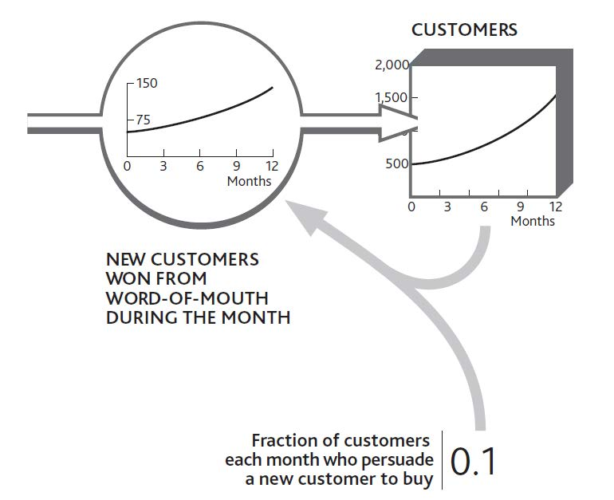
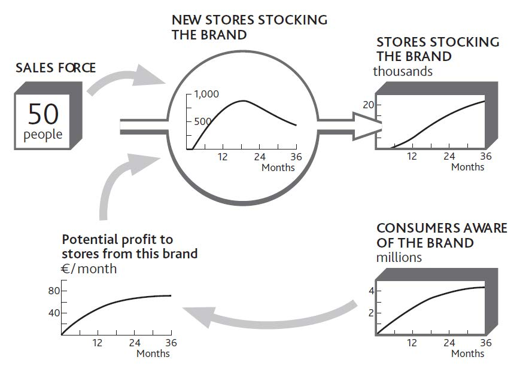
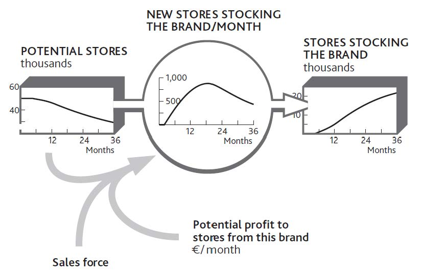

The simplest case of mutual support is when a resource drives its own growth. This process can be seen in an everyday situation: cash and interest. The more cash you have saved, the faster more cash is added to it. Another obvious case is word of mouth among consumers. Our basic principle of reinforcing feedbackCurrent levels of resources that determine the rate at which other resources increase or decrease. still applies: The more consumers there are, the faster they can win new ones (provided, that is, there are plenty of potential consumers left to be won).
This is much more than a qualitative notion; as we keep emphasizing, numbers matter and can be worked out. Figure 4.3 "The Arithmetic of Reinforcing Growth From Word of Mouth" takes us back to the start of Chapter 2 "Resources: Vital Drivers of Performance" and the simple customer stock at your restaurant. Let us imagine this time, however, that there is no loss of customers at all. In fact, you are winning more, thanks to the positive word of mouth from your existing clientele. Every 10 customers you have leads to you winning 1 new customer every month. Starting with 500, you win 50 during January. February then starts with 550, so that month you win 55, and so on.
You can see just how powerful reinforcing growth can be. By the end of the year the business is growing at almost three times the rate it was at the start. This may seem an astonishing and unrealistic rate of development, but it is very common indeed—look back at Alibaba.com in Chapter 1 "Performance Through Time", or think how quickly Skype took off. The reason it seems unusual is that we do not often experience it ourselves, and other organizations we see around us may be too small to be noticed while the process is in full swing.
It seems, though, that apart from cash and people-based resources, there are few other examples that are capable of this self-replicating behavior. This is because most other resources are inanimate and just sit there unless we do something with them. So we need to turn our attention now to the way one resource drives growth in others.
Figure 4.3 The Arithmetic of Reinforcing Growth From Word of Mouth
Consider the example of the consumer brand introduced in Chapter 3 "Resources and Bathtub Behavior". Building awareness and interest in a brand is essential, but if we actually want to sell anything, we have to get stores to stock it. A new brand thus needs to drive the inflow to the resource of stores stocking the brand. What other resources are required to achieve this?
First, we need consumers who want to buy the product. Retailers will not stock a product that is unlikely to generate profits for their stores, and these profits will only arise if consumers are likely to buy. A stock of interested consumers is not enough. Retailers need to know about the product and its potential profitability and must be constantly reminded of its attractiveness relative to other uses they might have for their shelf space. This requires a sales force. In this case, then, two resources are required: consumers and a sales force. If either is missing, stores will not be won. Figure 4.4 "Growth in the Number of Stores Stocking a Brand Depends on Sales Force and Consumers" shows how these two resources drive growth in stores.
This may seem a daunting mix of numbers to get your head around, so let us think through how a product manager might estimate these numbers, based on either experience with previous brands or from seeing what competitors have accomplished.
Figure 4.4 Growth in the Number of Stores Stocking a Brand Depends on Sales Force and Consumers
Our 50 salespeople can each make about 100 calls per month; that is 5,000 calls per month in total. However, it takes several calls to persuade a store that the brand is attractive, so perhaps only one call in four might be expected to achieve a sale. At first, so few consumers want the product that stores do not see much profit to be made, so sales calls are not successful at all. As consumer demand grows, the rate of sales success climbs.
Later, stores are won increasingly slowly because we are running out of stores to win. Figure 4.4 "Growth in the Number of Stores Stocking a Brand Depends on Sales Force and Consumers" is therefore incomplete; we need to see the falling stock of potential stores as well, as shown in Figure 4.5 "Limited Potential Slows Growth in Stores Stocking the Brand".
Running out of potential stores is not the only reason for the limited win rate, however. The product manager needs to go through a few steps in order to estimate this win rate over the 2 years of the product launch (Figure 4.6 "Estimating Sales Force Success Over Time").
Figure 4.5 Limited Potential Slows Growth in Stores Stocking the Brand
Figure 4.6 Estimating Sales Force Success Over Time

The product manager can use the same process to estimate how rapidly consumers might be made aware of the brand. Two factors drive awareness: the firm’s own advertising expenditures and the brand’s presence in stores.
We now have some circularity in our reasoning. Growth in consumer awareness depends in part on the resource of stores, and growth in stores depends on the number of consumers. Putting these two together gives us a precise picture of what we mean when we say that our resources are complementary.
As we have emphasized before, the connecting arrows in these diagrams mean much more than some vague relationship between one item and another. They mean that you can estimate the value of an item at any time if you know the values of all the factors linked into it with arrows. Adding the arrow from “Potential stores” to “New stores stocking the brand/month” in Figure 4.5 "Limited Potential Slows Growth in Stores Stocking the Brand" is therefore critical: You cannot estimate the rate of new stores without knowing the potential.
In the case of winning stores for a brand, it is relatively easy to identify and confirm the main factors in the win rate: namely, stores that will profit from the brand, the number of salespeople, and available stores. The explanations are not always so clear, however, so you will need to discuss with colleagues the factors most likely to drive a flow.
Imagine that staff turnover is causing you concern. There may be many reasons for this. How have your salaries changed, as well as those offered by your competitors? Has there been a change in the number of other job opportunities? Have competitors been increasing their hiring efforts? Has there been a change in your employees’ workload?
It is possible that by putting the history charts for these items around the flow you want to explain (staff lost per month), you will easily see what has been happening and why. However, it may be necessary to go further. One place to start is to ask people why they chose to act as they did. In this case, exit interviews will provide some information on why staff turnover is happening.
It may be that you will need to use statistical methods to see if your expected drivers really do explain the resource flow rate. Beware! The accumulating behavior of resources makes it unsafe to use correlation to explain resource levels. Remember that today’s customers are precisely the sum of all you have ever won minus all you have ever lost, so no other causal explanation can be meaningful, however good the correlation may seem to be.
However, you can safely use correlation to confirm possible causes of resource flow rates. One retail bank found an astonishingly close relationship between certain factors and the rate at which any branch was likely to see customers closing their accounts. Among these strong causes was the bank’s history of making mistakes with customers’ accounts.
As long as the growth rate continues, this self-reinforcing mechanism generates positive expansion. In the absence of any constraints, this growth will be exponential, increasing by the same proportion in each period. This is clearly a favorable situation for any firm to create, but there are three precautions to note:
Reinforcing growth is not free. Something has to create the resource in the first place. In our brand example, this kick start came from the advertising, without which nothing would have happened. Salespeople can only persuade stores to stock the brand if consumers are interested. In practice, salespeople might conceivably persuade stores to take a product on the promise that consumers will become interested, even if they are not yet. But this relies on the reputation and credibility of the sales force—another intangible resource that has to be built. There is no free lunch!
Reinforcing growth cannot continue indefinitely. Growth will inevitably come up against limits, either external (no more customers to win) or internal (not enough capacity to supply new customers). Even apparently unstoppable firms like McDonald’s and Coca-Cola hit the limit at some point, although that limit can be very high indeed.
Reinforcing feedback is capable of driving collapse. This problem arises when a decline in one resource leads to another resource draining away. This may in turn mean lower marketing spending, more people leaving the business to go to competitors, damage to the firm’s reputation, and possibly other related problems. In essence, the difficulties facing the business escalate and reinforce each other.
Organizations that rely on professional staff run the risk of self-reinforcing collapse. Examples arise in both businesses and public services: lawyers in a legal firm, information technology (IT) department staff, hospital nurses, police officers, and so on. Collapse happens through a sequence of events. Staff can initially cope with the demands made on them while their workload remains constant. However, this group gradually depletes through normal staff turnover. As numbers decline, the pressure on those who remain increases, leading to further turnover and yet more pressure.
In such cases, the system needs at least a temporary reprieve from the pressure to arrest the loss of staff. This can come from two principal sources: using temporary staff such as contractors, or reducing the workload, either by turning work away or simplifying what is done. These fixes come with their own dangers. Contract staff can actually make matters worse by needing guidance from the already pressured staff and by further demoralizing them. Turning work away may be advisable, but it can be an uphill struggle to persuade managers to do this when they are already facing business collapse.
Work pressure is not the only trigger for collapse. One consulting firm serving the finance industry lost just a few key clients. With less rewarding projects to work on, and with their professional reputation to worry about, key staff resigned and moved to competing firms. This loss of key consultants caused still faster loss of clients, some of whom actually moved with the consultants to the same competitor! And so the process continued until the firm effectively collapsed.
Critical to solving this problem is to decide quickly what to do, when, and how much. Diagrams like those in Figure 4.4 "Growth in the Number of Stores Stocking a Brand Depends on Sales Force and Consumers" and Figure 4.5 "Limited Potential Slows Growth in Stores Stocking the Brand" clarify the problem and shed light on the path out of trouble. They also provide a map of progress as the solution develops.
It is better, of course, to have a plan for solving these troubles before they ever arise. But best of all is to have a mutually supporting set of resources whose interdependence is so positively embedded that the risk of a complete collapse is always remote.
To see if your situation will reinforce growth or decline among one or more of your resources, the question to ask is, If this resource grows (or declines), will it have consequences that lead to further growth (or decline)?
We know these mechanisms as virtuous or vicious cycles. To find out, sketch the resources, flows, and intervening factors, and work through the story.
Figure 4.7 "Checking for Self-Reinforcing Growth and Decline Among Interdependent Resources" tells the story for our consumer brand. Starting at the bottom left, if the number of consumers increases, the potential profit available to stores increases, causing more to stock the product. As it becomes more visible, additional consumers are won more quickly. However, do not forget the self-limiting effect that comes from running out of both resources.
Figure 4.7 Checking for Self-Reinforcing Growth and Decline Among Interdependent Resources